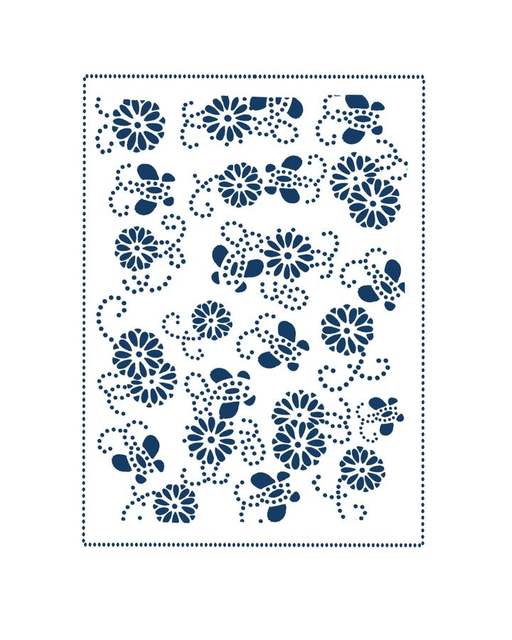
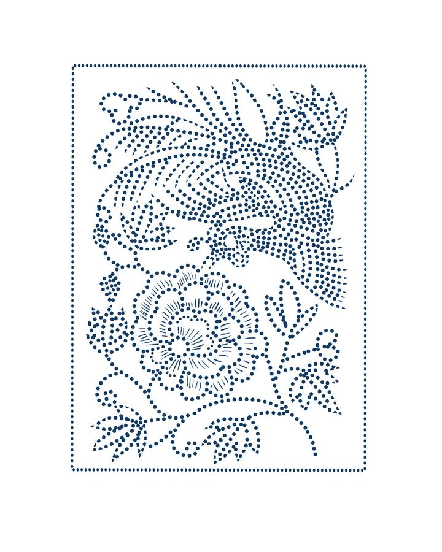
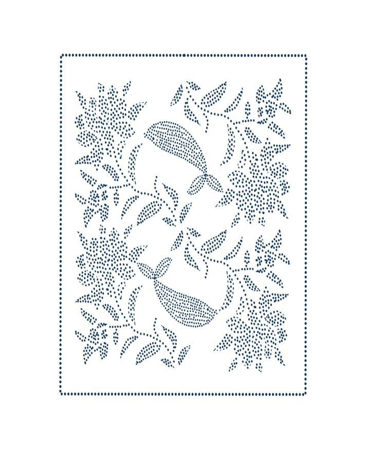
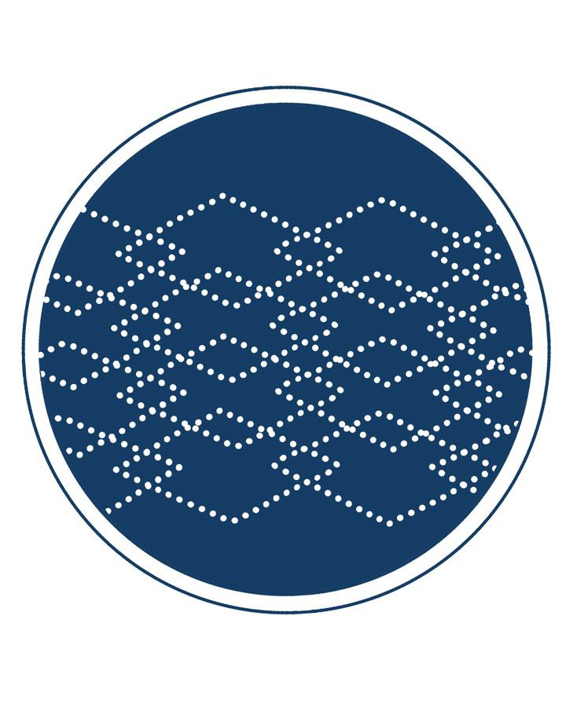
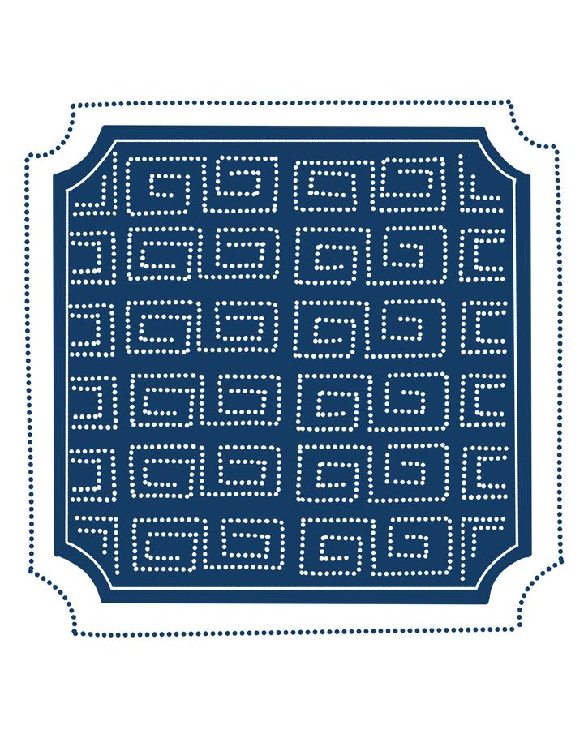
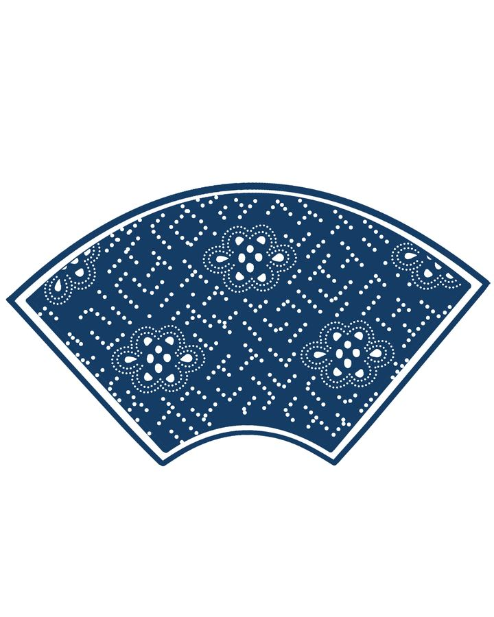
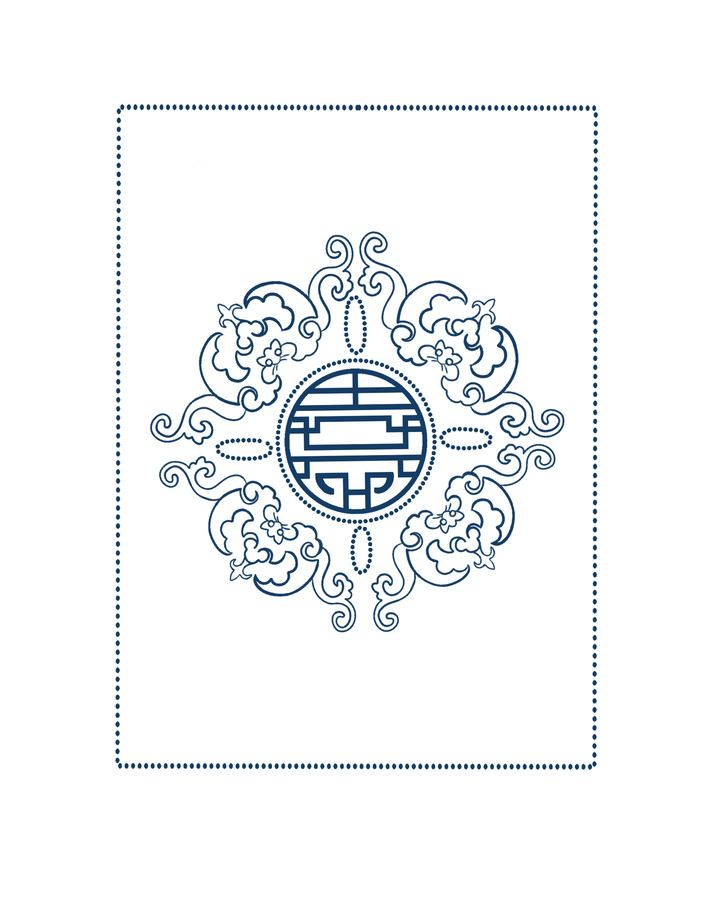

一
只有两种颜色，却有完整语法
蓝，是"养"出来的。蓼蓝等蓝草浸泡、发酵，再加石灰搅成靛；布在缸里浸染、取出氧化透风，反复六到八次，才够那口沉稳的蓝。
白，是挡出来的。防染浆盖住的纤维染不上色。手工刮涂的灰浆，待风干之时便会自然皲裂。布匹沉入靛缸，靛蓝沿着细密的裂隙缓缓渗入布面，留下丝丝缕缕的蓝纹，便是匠人所称的「冰裂纹」。裂纹随机而生，没有重复的模样，赋予每一块花布独有的印记，这份灵动的肌理，是机器印花永远无法复刻的手作温度。
国家级非物质文化遗产 · 项目编号 Ⅷ—24 · 首批名录
蓝印花布不用画笔，只用刻刀在油纸上戳出成千上万个点。点连成线，线勾出花、鸟、鱼、字，最后落于蓝底之上。我们把这些点一个个记下来：它的名字、它的寓意，还有刻它的人的手势。
蓝印花布
一块蓝印花布，最先看见的是白花。这白不是画上去的，刻刀在油纸上刻出花纹，镂空处露出布面；花版刷上桐油，轻铺在坯布上，防染浆从镂空处刮到布面。布入靛缸反复浸染，上过浆的地方染不上色。刮掉浆，那一块块白才显出来。
一
蓝，是"养"出来的。蓼蓝等蓝草浸泡、发酵，再加石灰搅成靛；布在缸里浸染、取出氧化透风，反复六到八次，才够那口沉稳的蓝。
白，是挡出来的。防染浆盖住的纤维染不上色。手工刮涂的灰浆，待风干之时便会自然皲裂。布匹沉入靛缸，靛蓝沿着细密的裂隙缓缓渗入布面，留下丝丝缕缕的蓝纹，便是匠人所称的「冰裂纹」。裂纹随机而生，没有重复的模样，赋予每一块花布独有的印记，这份灵动的肌理，是机器印花永远无法复刻的手作温度。
二
「药」，是防染浆里石灰和豆粉调的灰药；「斑」，是染出来的青白斑纹。名字最早在嘉定、安亭一带叫开。南宋嘉定年间（1208—1224），一位姓归的人把它做了出来。
《古今图书集成·职方典》：「药斑布出嘉定及安亭镇。宋嘉定中（1208—1224）有归姓者创为之。以布抹灰药而染色、候干、去灰药，则青白相间。有人物、花鸟，作被面、帐帘之用。」
明代的志书里，它又叫「浇花布」；南通一带因染料的关系，称作「靛蓝花布」。这三个都是地方叫法，明清两朝并没有统一的名字。「蓝印花布」这四个字，是二十世纪学界和行业慢慢叫开的。

三
药斑布起于嘉定、安亭。棉种和纺织手艺往北传，它跟着走，在南通扎了根。南通濒江临海，沙质土适合种棉；明代中叶起，这里种蓝、制靛的渐多，土靛要当贡品上缴朝廷，单海门一处，每年就交三百五十斤。
坯布、染料都在手边，家家纺纱、户户织布，染坊遍布集镇。清末，单是南通县二甲镇，就有二十余家染坊。还有挑担走街串巷的「花担艺人」，年年翻新花样；一幅新刻的花版，能走遍整个南通。纹样就是这么一版一版「比」出来的。
四
被面、帐帘、枕套、包袱布、围裙、头巾、蚊帐：铺的、盖的、穿的、戴的。
包袱布的图案，是给场合挑的：送长辈挑「福寿双全」，婚嫁用「和合二仙」，盼孩子有出息就刻「麒麟送子」。行里讲「有图必有意，有意必吉祥」。六大题材，每一图都是一句祝词。

五
2006 年，「南通蓝印花布印染技艺」列入第一批国家级非物质文化遗产名录（编号 Ⅷ—24）；同年，南通被命名为「中国蓝印花布之乡」。2013 年，南通蓝印花布成为国家地理标志保护产品；2018 年，入选第一批国家传统工艺振兴目录。
名头再多，版还要一版一版刻，布还要一缸一缸染。看它怎么做出来
为什么值得被记住
蓝印花布只有两种颜色。要把一件事说清楚，靠的就是这套用点、线、面组合的语法。这套语法不在布上，在人手上。
0+ 年
起于南宋嘉定、安亭一带，兴盛于南通，传承至今
Ⅷ—24
2006 年列入首批国家级非遗名录的项目编号
0万+
传承团队已收集的散落民间纹样（2024 年报道）
0万+
同期收集的传统蓝印花布实物
0+
在全国各地培养的蓝印花布传承人
5道
刻版、刮浆、入缸、晾晒、刮灰，全部手工
四十余年的收集成果
纹样与实物件数对比。数据来源：《光明日报》2024 年 11 月 17 日报道（吴元新团队四十余年收集）。
价值
它的美不是孤立的：往下看，是一套完整的手工系统；往上看，是一部写在布上的民间文化史。
壹
一套蓝白的语法
蓝印花布只有两种颜色，却发展出点、线、面的完整语法。走近了看，线其实是点：密密的圆点排成线、排成花，行里叫「点子语言」。点子语言是一样，冰裂纹是另一样：灰浆裂出的细碎蓝纹，没有两块布相同。——机器印染复制得了图案，却复制不了这套手感的呼吸。
贰
人生大事，都写在布上
有图必有意，有意必吉祥。婚嫁、添丁、祝寿、乔迁，人生的大事，布里都有一幅纹样来应景。这些纹样不靠文字，靠谐音和典故说话。不识字的人，也读得懂布上的好彩头。
叁
活着的第一手资料
从宋代药斑布到今天，八百年未曾断代。同一款凤穿牡丹，不同时代填点刀法不一样，线条粗细也不一样——光看纹样就能判断一块老布的大致年代。馆里收藏了六万多件实物、二十多万个纹样，按面料、工艺、纹样分类整理。这些布是研究纺织史、民俗史、经济史的一手材料，可以排出一部蓝印花布的年代序列。
肆
一座开放的图库
靛蓝染料取自植物，防染和显花全过程不依赖化学合成染料。花版与纹样数字化开放后，设计师可以直接调用八百年积累的纹样进行再创作。档案收录的全部纹样高清可下载，支持刻版打印、临摹学习与设计衍生。
关于本档案
本站是一个由大学生团队整理的蓝印花布数字档案：把散落的花版与纹样收进同一张网，标注清楚名字、寓意与出处，再免费交还给所有人。
壹
把博物馆展柜里、图录夹页里的纹样放到网上，配上名字、寓意、载体与口诀，打开网站就读懂。目前档案已收录 11 组纹样、覆盖六大题材。
贰
全部纹样原图高清开放，可直接打印刻版、临摹与再设计。纹样活在纹样包里，更活在下一块新刻的被面上。
叁
用数字的方式留住刻版人的手艺细节：点距、断线、留白，连同五道工序的口诀一起记录。纸版会脆，染缸会冷，但是图样和语法不会一起消失。
五道手
从上浆到出缸全靠手工。它慢，而且不接受加速。这门手艺因此金贵，也因此差点消失。

第壹道
在油纸上镂出花纹，线条断开、气不断，行话叫「笔断意连」。刻完刷一层熟桐油定型。镂空处，就是将来留白的地方。
手工刻版 · 桐油定型
第贰道
花版轻铺在坯布上，用刮刀把防染浆刮过镂空处，再吊挂晾干。哪里上了浆，哪里就染不上色。白花就是这么"留"出来的。
防染浆 = 石灰粉 + 黄豆粉
第叁道
布先要入靛缸浸染约二十分钟，再取出氧化透风约三十分钟。如此反复六到八次，才染得出那口沉稳的蓝。想一次染成的，做不出蓝印花布。
反复 6—8 次入缸
第肆道
晾晒架约七米高，师傅用长竹竿把湿布一匹匹挑上去。洗去浮色，蓝色愈蓝，白花愈清。
晾晒架约 7 米
第伍道
晒干后用圆口刮刀刮去干透的浆粉。这是整道工序里最像变魔术的一步：刮掉的是灰，留下的是花。
圆口刮刀 · 显花五道工序演示 · 全片 2 分 51 秒 · 抖音 @赵小满（抖音号 56148294854）
传承人
手艺往下走，难的不在技术，是有没有人接着做。
国家级非遗代表性传承人 · 南通蓝印花布博物馆馆长
"能够走进蓝印花布作坊，从事花布印染工作，普及推广传承印染技艺，这是我儿时的梦想，也是我毕生所求。"
市级非遗传承人 · 南通大学蓝印花布艺术研究院
"这是一直在路上的过程。蓝印花布的历史那么长，需要学习的还有很多很多。"

纹样档案
每个纹样都标着名字、寓意和常用载体。眼下收了十三个，还在继续收录。

蝶恋花 蝶与花相遇，取爱恋与美满。 鱼虫LB-0001
凤戏牡丹 凤为百鸟之王，牡丹为百花之王。两王相逢，民间用它指最顶格的吉庆。 花鸟LB-0002
连年有余 「莲」谐「连」，「鱼」谐「余」。两条鱼首尾相顾，年年有结余。 鱼虫LB-0003
方胜纹 「胜」原是古代妇女的头饰，两枚相叠成方胜，取「同心相连」之意。 几何LB-0004
回纹 一线回环，首尾相接，无始无终。民间叫它「富贵不断头」。 几何LB-0005
盘长纹 一线回环盘绕，无始无终。中国结的前身，取「绵延不绝」之意。 几何LB-0006 并蒂莲
一茎两花，并头而开。自然界里概率极低的祥瑞，民间用它许「并蒂同心」的愿。
花鸟LB-0007
并蒂莲
一茎两花，并头而开。自然界里概率极低的祥瑞，民间用它许「并蒂同心」的愿。
花鸟LB-0007
 麒麟送子
跨麟的童子，外婆家最重的贺礼。盼的是孩子聪明、有出息。
人事LB-0008
麒麟送子
跨麟的童子，外婆家最重的贺礼。盼的是孩子聪明、有出息。
人事LB-0008
 暗八仙
八仙不露面，法器替他们说话。祝福说得含蓄，排场一样不少。
器物LB-0009
暗八仙
八仙不露面，法器替他们说话。祝福说得含蓄，排场一样不少。
器物LB-0009
 琴棋书画
四物同框，是普通家庭对「耕读传家」最朴素的向往。
器物LB-0010
琴棋书画
四物同框，是普通家庭对「耕读传家」最朴素的向往。
器物LB-0010
 双喜团花
两喜并立，好事成双。笔画里填满点子，外围用花环围成一座小建筑。
文字LB-0011
双喜团花
两喜并立，好事成双。笔画里填满点子，外围用花环围成一座小建筑。
文字LB-0011

福寿双全 蝙蝠环拱一团寿，「蝠」谐「福」。给长辈的一句图说，不用多解释一个字。 文字LB-0012 麻姑献寿
麻姑执杖捧觞，仙鹿回首相顾。给女性长辈祝寿的专属图样。
人事LB-0013
麻姑献寿
麻姑执杖捧觞，仙鹿回首相顾。给女性长辈祝寿的专属图样。
人事LB-0013
纹样下载
我们把全部纹样开放为高清原图，供任何人下载、临摹、再设计。你可以把它打印出来、照着刻版，或用数字化花版创作出属于自己的蓝印花布。